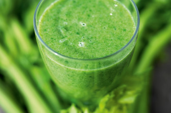

Welcome to
Nasi goreng recept - Indonesische gebakken rijst - Lekker en Simpel
2021.03.30 15:54Meteen naar de content Lekker en Simpel Home Recepten Ontbijt ideeën lunchgerechten Tussendoortjes Voorgerechten Hoofdgerechten Bijgerechten Desserts Salade recepten Soepen Dranken Bakrecepten Thema’s Seizoenen Herfstrecepten Winterrecepten Lenterecepten Zomerrecepten Feestdagen Sinterklaas recepten Kerstrecepten Voorgerechten Kerst Hoofdgerechten Kerst Nagerechten Kerst Oud-en-nieuwrecepten Paasrecepten Oranje recepten Keukens Italiaanse recepten Griekse recepten Mexicaanse recepten Amerikaanse recepten Aziatische recepten Hollandse recepten Franse recepten Indische recepten Marokkaanse recepten Overig Snelle recepten Stamppot recepten Ovenschotels Pizza recepten Hartige taarten Tapas recepten Barbecue recepten High tea recepten Kinderrecepten Familie recepten Gourmet recepten Camping recepten Smoothie recepten Dieet Vegetarische recepten Vegan recepten Koolhydraatarme recepten Gezonde recepten Slanke recepten Zoek op ingrediënt Kip Gehakt Vlees Vis Aardappel Wraps Rijst Pasta Brood Couscous Ei Inspiratie Weekmenu’s Kooktips Kijkje achter de schermen Profiel Mijn favoriete recepten Profiel aanmaken Login Contact
Nasi goreng recept
Hoofdgerecht 2 personen 10 min. bereidingstijd10 min. kooktijd
We kwamen er dus laatst achter dat we niet eens een nasi goreng recept op de site hadden staan, maar daar komt vandaag verandering in. We hebben wel een Surinaamse nasi of een nasi met bloemkoolrijst gemaakt, maar dat is toch net even anders. Nasi goreng, oftewel gebakken rijst, is door de vele kruiden rijk aan smaak. Serveer er een lekker gebakken eitje, pindasaus en wat loempia’s bij en smullen maar!
Aan de slag met het nasi goreng recept
Begin met het koken van de rijst, volg hiervoor de aanwijzingen op zoals beschreven op de verpakking. Ondertussen snipper je de ui, pel en snijd je de knoflook fijn en snijd ook de paprika in blokjes. Was de prei en snijd in kleine halve ringen. Giet het water van de rijst af en laat het liefst de rijst nog even afkoelen. Doe een scheutje olie in een hapjespan (of wok) en bak de ui, knoflook, paprika en prei aan voor ongeveer 5 minuten. Voeg dan de kruiden toe, even roeren en dan kan de rijst erbij samen met de sambal en ketjap. Bak nog eens 5 minuten. Snijd ondertussen een bosuitje in ringetjes en bak een twee spiegeleitjes in een koekenpan. Schep de nasi goreng op twee borden, eitjes erbij, pindasaus en eventueel wat kroepoek. Eet smakelijk!
Tip: Kleed de nasi gerust aan met wat dungesneden wortel of wat gebakken stukjes kip.
Bewaar het nasi goreng recept op Pinterest !
Hoofdgerecht 2 personen 10 min. bereidingstijd
10 min. kooktijd Benodigdheden 150 gr rijst pandan- of zilvervliesrijst 1 kleine rode ui 1 paprika prei 1 teen knoflook 3 el ketjap manis 1 tl sambal 0.5 tl trassi 1 tl komijn 0.5 tl laos 1 tl gedroogde koriander 1 tl kurkuma 1 bosui 2 eieren
Onze kookboeken
Laat een reactie achterGeef een reactie Antwoord annuleren
Recepten Ontbijt Lunch Tussendoortjes Voorgerechten Bijgerechten Hoofdgerechten Desserts Salades Dranken Bakrecepten Dressings en sauzen Seizoenen Herfst recepten Winter recepten Lente recepten Zomer recepten Thema’s Snelle recepten Soep recepten Tapas recepten Barbecue recepten High-tea recepten Kinderrecepten Familierecepten Campingrecepten Stamppot recepten Hamburger recepten Gourmet recepten Cake receptenPizza recepten
Ovenschotels Hartige taarten Smoothie recepten Spaghetti recepten Omelet recepten Hartig Zoet Keukens Italiaanse recepten Griekse recepten Mexicaanse recepten Amerikaanse recepten Oosterse recepten
Hollandse recepten Spaanse recepten Indische gerechten Marokkaanse gerechten
Franse keuken Ingredient Aardappel recepten
Rijst recepten Pasta recepten Couscous recepten Recepten met ei
Recepten met brood
Recepten met wraps Vlees/vis/vega(n) Recepten met kip Recepten met gehakt Recepten met vlees Recepten met vis Vegetarische recepten
Vegan recepten Feestdagen Sinterklaas recepten Kerstrecepten Oud-en-nieuwrecepten Paasrecepten Oranjerecepten Dieet Gezonde recepten Slanke recepten Koolhydraatarme recepten Facebook Twitter Instagram Youtube Pinterest Copyright © 2021 - Lekker en Simpel
